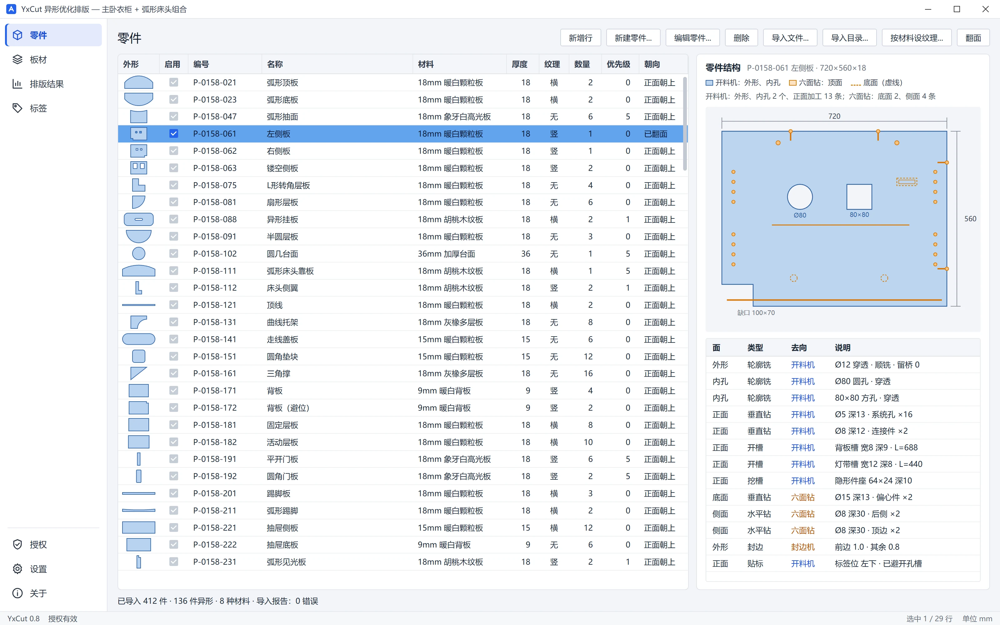
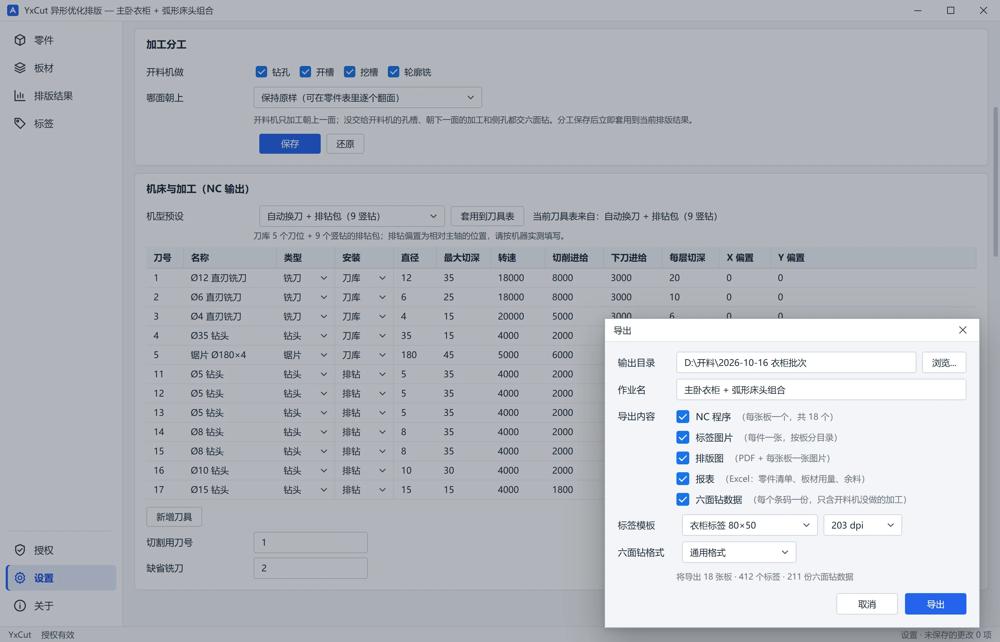
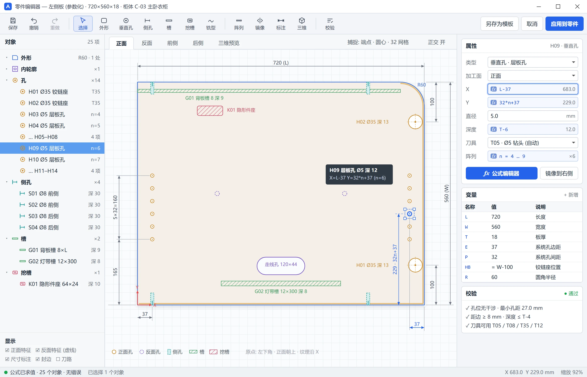
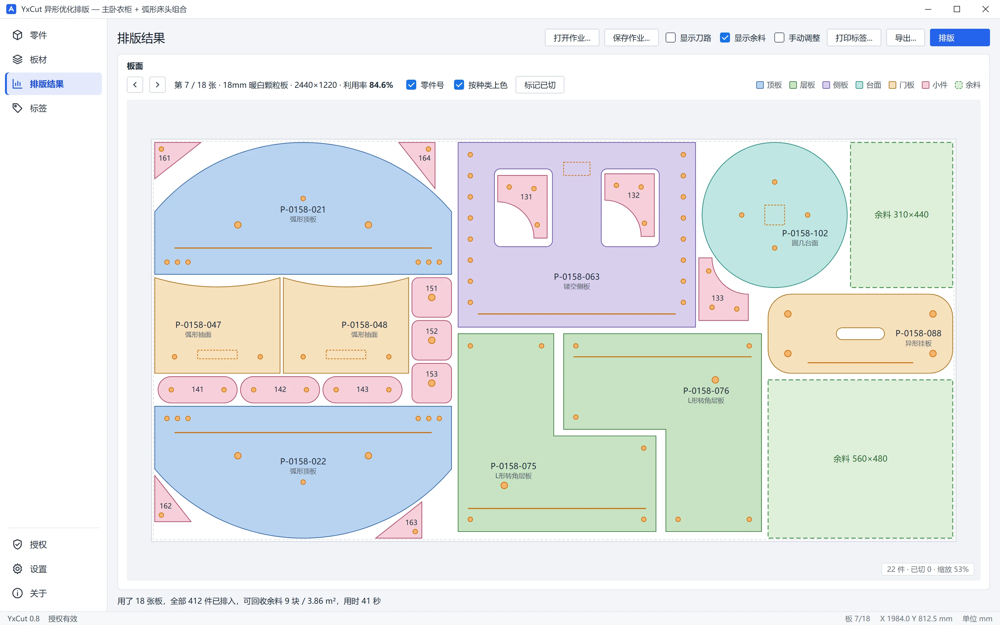

85~94%
大批量材质组利用率
真实生产订单实测
6,000+
件真实零件验证
全部排入，复核全部通过
-27%
优化耗时缩短
同批订单板数同步减少
1
步生成全部输出
程序、标签、报表、六面钻数据
01 · TRUE-SHAPE NESTING
弧形、L 形、带内孔——一样排得紧
零件按真实外形而非外接矩形排版。小件自动排入大件的内孔，并优先切出；纹理方向、旋转角度、板材缺陷区与零件优先级全部纳入考量。
- 按零件类型着色，相同排法自动标出
- 每张结果自动复核：不越界、不重叠、间距足、数量对
- 支持拖动、靠紧、旋转、锁定后重排其余零件
 排版局部
排版局部
02 · IMPORT & STRUCTURE
零件进来时，加工信息一样不少
批量导入主流设计拆单软件输出的参数化零件文件与开料清单。零件表直接显示每个零件的真实外形；零件结构面板逐项列出哪些由开料机完成、哪些交给六面钻。
- 导入报告提前指出异常，问题不带进排版
- 零件可单独启用、设优先级、翻面
- 按材料一键设定纹理方向

零件结构
03 · CNC ROUTER CAM
外形、孔、槽、挖槽，一个程序全部完成
开料机一次完成外形与内孔切割，以及朝上一面的钻孔、开槽、挖槽与轮廓铣。小件可留皮或桥接固定，斜线下刀保护刀具与板边。
- 可配置后处理与机型预设
- 导出前安全检查：刀具、切深、与相邻零件的干涉
刀路
04 · MACHINE & EXPORT
机床设定一次，所有输出一键生成
选择机型预设——单主轴、自动换刀、排钻包——再按实际机床微调刀具表。之后一次导出，即可在同一个作业目录中得到逐板加工程序、标签图片、排版图、报表与六面钻数据。
- 刀具表：直径、切深、转速、进给、偏置
- 自由设定开料机与六面钻的工序分工

一键导出
05 · PART EDITOR
参数化零件：尺寸一改，孔位跟着走
通过外形模板、孔、侧孔、槽、挖槽创建或修改零件。加工位置可以写成公式——定义为“L − 37”的孔，在板长变化后依然准确。
- 公式编辑器与变量表
- 倒圆角、切角、缺角与组件导入

06 · OFFCUTS & DOWNSTREAM
余料留下来，剩余工序交给六面钻
每张板上可回收的余料自动识别、列入清单，方便切出再用。开料机不做的工序——侧孔、反面孔槽——按条码逐件输出为六面钻数据，方向与零件下线时完全一致。
- 可回收余料清单随 Excel 报表一同输出
- 作业可保存、重开，并记录已切板材

功能一览
从零件文件到加工程序
行业格式导入
参数化零件文件与开料清单，附导入报告。
真实外形排版
内孔排件、多角度旋转、纹理与缺陷避让。
手动调整
拖动、旋转、换板、锁定重排，可撤销。
开料机刀路
外形、钻孔、开槽、挖槽、轮廓铣。
安全复核
刀具、切深、干涉检查与程序回读复核。
参数化编辑
公式、变量、模板，另存为零件文件。
六面钻数据
按条码逐件输出，附对照清单。
带外形的标签
零件外形缩略图、条码、直连打印。
余料与报表
排版 PDF、Excel 报表、可回收余料清单。
规格参数
技术规格
| 适用设备 | 数控开料机（加工中心）：单主轴、多工序、直排 / 圆盘刀库、排钻包 |
|---|---|
| 运行环境 | Windows 10 / 11（64 位） |
| 数据输入 | 主流设计拆单软件输出的参数化零件文件与开料清单 |
| 数据输出 | 逐板开料机程序、六面钻数据、零件标签、排版 PDF / 图片、Excel 报表 |
| 加工能力 | 外形与内轮廓、垂直钻孔、开槽、挖槽、轮廓铣、桥接 / 留皮、斜线下刀 |
| 授权方式 | 单机授权，提供试用 |
搭配使用